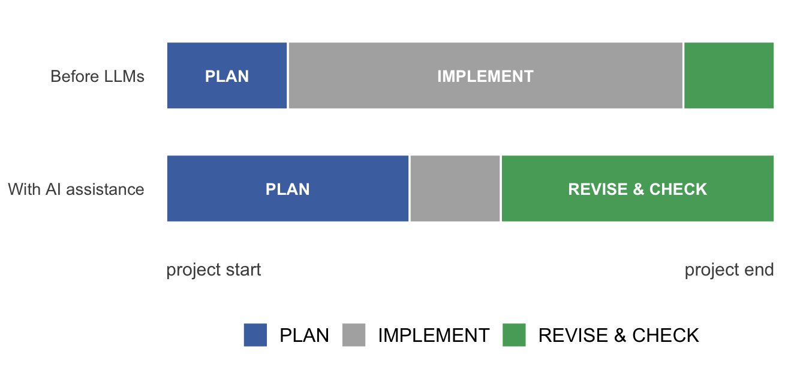

library(dplyr)
#>
#> Attaching package: 'dplyr'
#> The following objects are masked from 'package:stats':
#>
#> filter, lag
#> The following objects are masked from 'package:base':
#>
#> intersect, setdiff, setequal, union
library(behdslabs)
app_task_completion |> filter(completion_rate > 0.2)
#> task device completion_rate n_attempts
#> 1 A mobile 62 1650
#> 2 B mobile 63 1120
#> 3 C mobile 37 650
#> 4 D mobile 33 834
#> 5 E mobile 28 382
#> 6 F mobile 6 746
#> 7 A desktop 82 216
#> 8 B desktop 68 50
#> 9 C desktop 34 1186
#> 10 D desktop 35 750
#> 11 E desktop 24 786
#> 12 F desktop 7 68221 AI and responsible coding
by Giorgio Arcara
21.1 The current situation
Since late 2022, when ChatGPT was first released to the public, the task of programming (or coding, as it is often called) has changed dramatically.
Until a few years ago, writing code for the kind of analyses covered in this book required knowing a whole series of things: the basics of a programming language, the rationale behind each analysis, which arguments to set and why, how to structure the code, and — above all — how to cope when things did not work. A large share of a programmer’s time went into fighting bugs (code that does not behave as intended) and searching the web for solutions. People routinely pasted their error messages into Google and followed the results to sites such as Stack Overflow (for programming) or Cross Validated (for statistical questions), hoping to find an answer or a hint. These forums were an invaluable resource, kept alive by experienced programmers and data analysts who spent their own time, for free, answering questions and posting solutions.
Things are now completely different because of the introduction of large language models (LLMs). LLMs are machine-learning models trained on very large amounts of text to predict the next chunk of text (a token) in a sequence; through this training they acquire a broad ability to generate and transform language, including computer code.1 At the time of writing, the models most used for coding are ChatGPT (OpenAI), Claude (Anthropic), and Gemini (Google).
It is worth stressing that LLMs also stand on the shoulders of giants: the sites mentioned above are part of the material they were trained on, so they learned what correct code looks like partly from those very communities.2
LLMs are particularly good at coding, and you can treat them as teaching assistants or even as a substitute for one. As already noted in the introduction, you can literally upload a dataset to an LLM and ask:
“please run some detailed analysis and return some plots starting from this file”.
The trivial obstacles and the long fights against bugs that used to dominate a programmer’s day are, for many tasks, a distant memory. LLMs are now very effective at assisting with an analysis, and often at drafting one from scratch. But here lies a slippery slope: it is easy to delegate every step to a tool that is much faster (and apparently also much better) at exactly the things this course is trying to teach you. Why spend hours on something an LLM can do in seconds?
New terms have appeared to describe this shift, such as vibe coding3 and AI-assisted coding. Both refer to a way of working built around a continuous back-and-forth with an LLM. In the rest of this book (and in Part 2) I use the term AI-assisted coding, because its meaning is more transparent.
Let me also state my position up front: I believe the overall effect of LLMs on coding is positive. They raise the bar for what counts as good code, a good analysis, and, above all, a good analyst.
In the next sections I discuss some pros and cons of AI-assisted coding.
21.2 Advantages of AI-assisted coding
There are many advantages to coding with LLMs. Here are some of them.
21.2.1 You no longer lose time on trivial obstacles
Coding used to be genuinely frustrating at times. Imagine you simply need to load a file into your favourite programming language — say, the data from a study on the usability of a smartwatch — and, for some reason, the import does not work. Especially for a beginner, this could turn into a seemingly endless task. Now, whenever you hit a problem like this, you can ask for hints and usually get several possible ways to solve it.
21.2.2 LLMs can make any step transparent
You can ask an LLM to explain any step you are performing and to clarify why the code is written the way it is. In the past, coding sometimes meant copy-pasting working code without really understanding how it worked. This is, in fact, what normally happens whenever you call a function from a package: you trust that someone else wrote and tested it correctly. With an LLM you can decompose unfamiliar code, rewrite it into a form that is clearer to you, or ask for a step-by-step explanation of someone else’s code. One caveat: an explanation is only useful if you can still check it. If you cannot judge whether the answer is correct, you have shifted the trust problem, not removed it.
21.2.3 LLMs can help you code better, not just code
There are many ways to write code for the same task. You can write it more clearly, follow established conventions, and avoid unnecessary repetition. LLMs make it easier to follow good practice. You can ask, for example:
- “Can you rewrite this so it is easier to read?”
- “Is there a way to make this code less repetitive?”
- “Does this follow the tidyverse style conventions?”
- “What input checks should I add so this fails loudly when the data is wrong?”
For a book-length treatment of this idea aimed at researchers, see R. A. Poldrack’s Better Code, Better Science.
21.2.4 LLMs can help you check your code for errors
Whenever you write code, there is a real risk of mistakes. Here I want to focus on the most dangerous kind: silent errors — cases where the code runs without any error message but does not do what you intended.
For example, suppose you want to keep only the tasks whose completion rate is above 20%, and you write the following:
The code runs, and it returns a table. So far, so good. But there is a subtle, vicious bug: completion_rate is recorded as a percentage (from 0 to 100), not as a proportion (from 0 to 1). Every row has a completion rate well above 0.2, so the filter removes nothing, and the code silently fails to do what it was meant to do.
LLMs can be very useful for this kind of debugging (finding mistakes in code), and you can spend the time you save building better checks around code that already “works”.
21.3 Disadvantages of AI-assisted coding
Of course, there are also disadvantages.
21.3.1 The dark side of LLMs: you may be tempted to delegate everything
This is the central danger; the others are really facets of it. You never actually learn how to build an analysis; you only learn to recognise code that looks plausible. This is especially harmful for beginners, who do not build the underlying skill in the first place.
21.3.2 You may not know what your code is doing
This is dangerous for several reasons. If you cannot follow your own analysis, you cannot vouch for it — and you are responsible for it. For an exam this is a form of cheating; in a job it is worse.
21.3.3 You may never actually learn to code or to analyse data
The more you delegate, the less you learn. Making mistakes and working through them is part of how knowledge becomes solid. The struggle is, sometimes, the point: it is what makes the knowledge stick.
21.4 How to integrate AI-assisted coding into your learning (and practice)
AI-assisted coding can make you a better coder. If you are using this book to prepare for an exam or to learn, it can also accelerate your progress. The key is to use it to support your learning, not to work in place of your learning.
21.4.1 Bad consequences of delegating all coding to AI
The longer the code or the analysis plan, the more it can drift from your original intent. Producing code for a simple analysis is easy for an LLM. But as the task grows more complex, the model is more likely to do something that departs slightly from what you had in mind. This is not really a flaw of the LLM; it is usually a gap in your original plan. A good programmer is more like an architect: someone who knows exactly what they are building and why, with full control over every part of the plan.
Without knowing what you are doing, you may miss important details. For any data science problem there are, in practice, countless ways to proceed. Each choice has implications, subtle trade-offs, and pros and cons, and it is essentially impossible to explore them all. There is even a strand of the methodological literature devoted to this issue, known as multiverse analysis.4
21.5 How to responsibly integrate AI into doing data science
In the following lines I sketch some good habits for using AI in data science. For simplicity I distinguish two settings: AI-assisted coding for learning data science, and AI-assisted coding for doing data science — for example, in a research project or on the job.
Two general suggestions apply to both settings.
First, whenever you ask an LLM something that is not self-verifying — for example, which analyses could be run on a dataset — always ask for references, and check them. You should never take an LLM’s answer on trust.
Second, and just as important:
Always check the code an LLM writes for you. If you do not understand it, break it down and work through it line by line. It is entirely possible that the code does not do exactly what you intended, and you are the one responsible for the analysis — not the model.
21.5.1 AI-assisted coding for learning data science
Here are a few suggestions on how to use AI-assisted coding to learn data science, and in particular to follow this course.
Use AI as an assistant or a teacher, not as a substitute. Learning means acquiring a new ability. Prompting a model and copy-pasting its answer is not learning. Try to work from scratch and write your own code. At first it will be slow and frustrating, but that is part of the process. Push yourself to do the exercises and to rely on AI as little as possible. But do not refuse to use it when you are completely stuck.
Use AI to explain code. AI is an excellent tool for explaining code. If some code in the book leaves you wondering why it is written in a particular way, ask for a clarification.
Use AI to test yourself. AI can also generate exercises and tests, either from scratch or as a follow-up to a question like the ones in point 2. You can ask it to build exercises or a step-by-step path to learn how to use something.
21.5.2 AI-assisted coding for doing data science
Doing data science is something you may well do in the future, and there too LLMs can help. Before getting to the habits, a few words on what coding for an analysis actually involves.
21.5.2.1 Coding for a data science project, in essence
Coding for an analysis can be thought of as three main steps: PLAN, IMPLEMENT, and REVISE & CHECK.
Traditionally, implementation was the longest step and the one that absorbed most of the time. Writing the code to run an innovative or cutting-edge analysis, and producing polished plots, was something only a few people could do. Now it is within reach of anyone after a few well-written prompts. In practice, the planning and implementation steps used to blur together, because detours were forced whenever some code did not work or a solution could not be found in reasonable time.
AI-assisted coding changes this picture. Implementation is now easy — things that once took weeks are done in seconds. That frees time to be a better analyst by investing more in the other two steps: planning, and revising and checking the code and the results (Figure 21.1).

Plan the code first, then use LLMs to help implement it. Once you know enough about how to write code for a given analysis, you can speed up implementation by asking an LLM to draft the code for an analysis you have planned in detail. You can plan before even opening your computer — often it is better done on paper. You spend more time planning and thinking, and less time implementing. This normally leads to clearer ideas and better code.
Use LLMs to improve your code. As noted among the advantages above, you can keep refining your code and spotting bugs by asking an LLM for tests. Testing was rarely done in traditional analysis workflows; now it is easy to build into almost any task. Remember to check the code after it is implemented.
Use LLMs to broaden your knowledge. A few well-chosen questions can challenge your habits and make you a better coder and analyst: “Can you suggest alternative approaches to analyse these data with this aim, with references?” or “What are the weak points of my analytical approach?”
21.5.2.2 Example prompts for drafting code
The way you phrase a drafting prompt makes a large difference to how well the result matches what you actually need.
Example of a bad prompt for drafting:
“Here I’m uploading the dataset, please make some analysis on UX and plots.”
Example of a good prompt for drafting:
“Please help me draft the code that performs the following steps: 1) import the data; 2) compute descriptives, including mean, median, etc.; 3) fit a regression with x as the predictor(s) and y as the dependent variable, and run diagnostics using the
performancepackage.”
Notice that the good prompt is almost entirely about design, and only marginally about implementation: it specifies which steps to take and in which order, not the code itself. This is exactly the PLAN step from Figure 21.1 written out as a prompt — and planning is the part an LLM cannot do for you.
Especially at the beginning of your learning, do not rely too heavily on drafting code with an LLM. Try writing the plan, and as much of the code as you can, on your own first. Use drafting to save time on tasks you already understand, not to skip understanding them in the first place.
21.5.2.3 Example prompts for verifying and checking code
Prompts for fixing or checking code deserve the same care — and here the temptation to under-specify is even stronger.
Example of a bad prompt for verifying/checking:
“The code is not working, fix it.”
Example of a good prompt for verifying/checking, after spending some time checking the code on your own — and not asking for help immediately:
“Without giving me the right solution, and considering I’m a beginner, can you help me find where the mistake is in this code? Please don’t give me the solution directly, help me learn.”
This style of prompt keeps the debugging struggle in your hands rather than the model’s. As noted above, the struggle is often what makes the underlying skill stick; a prompt like this lets the LLM guide you toward the mistake without doing the learning for you.
21.6 Disclaimers on the use of AI
Many academic and professional contexts now require you to disclose, explicitly, whether and how you used AI tools in a piece of work. This is good practice to adopt in this course too, even when it is not formally required: it costs little, and it makes your work easier to evaluate fairly.
A disclaimer should typically state, briefly: (1) which AI tool(s) you used, (2) for which specific parts of the work (e.g. drafting code, checking for errors, writing text), and (3) that you reviewed the result and take responsibility for it. This mirrors standards already adopted in scholarly publishing:
- APA Style — How to cite ChatGPT: describe, in the relevant section of your work, how a generative AI tool was used, together with the prompts you gave it and the AI-generated text you relied on.
- COPE (Committee on Publication Ethics) — Authorship and AI tools: AI tools cannot be listed as authors; authors must transparently disclose which tool was used and how, and remain fully responsible for all content, including any parts produced with AI assistance.
- ICMJE — AI use by authors: authors must disclose the use of AI-assisted technologies and describe how they were used; AI output must be verified, not treated as a primary source.
For coursework, unless your instructor gives more specific instructions, a short note such as “I used [tool] to help draft the regression code in Section X and to check it for errors; I reviewed the final code and take responsibility for it.” is normally sufficient. When in doubt, check your course’s or institution’s own AI policy first, since it may be more specific.
21.7 Further reading
For a practical checklist of good practices for using AI in data analysis, see the ONDA Lab guide to AI-assisted coding.
For an accessible, practice-oriented introduction aimed at scientists, see R. A. Poldrack, Better Code, Better Science.↩︎
Code-generation abilities were demonstrated early on models trained on large public code corpora; see M. Chen et al. (2021), Evaluating Large Language Models Trained on Code, https://arxiv.org/abs/2107.03374. Since these tools became widely available, several analyses have reported a marked decline in traffic and in new questions on Stack Overflow.↩︎
The expression vibe coding was popularised by Andrej Karpathy in early 2025 to describe leaning fully into the model’s suggestions and paying little attention to the code itself. I avoid it here precisely because that attitude is the one this chapter warns against.↩︎
S. Steegen, F. Tuerlinckx, A. Gelman & W. Vanpaemel (2016), Increasing Transparency Through a Multiverse Analysis, Perspectives on Psychological Science, 11(5), 702–712.↩︎